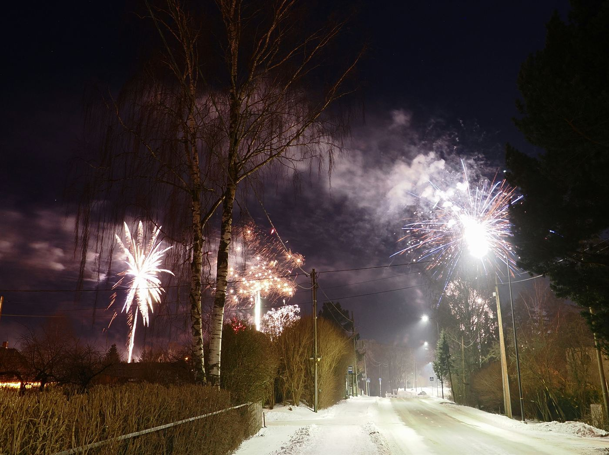
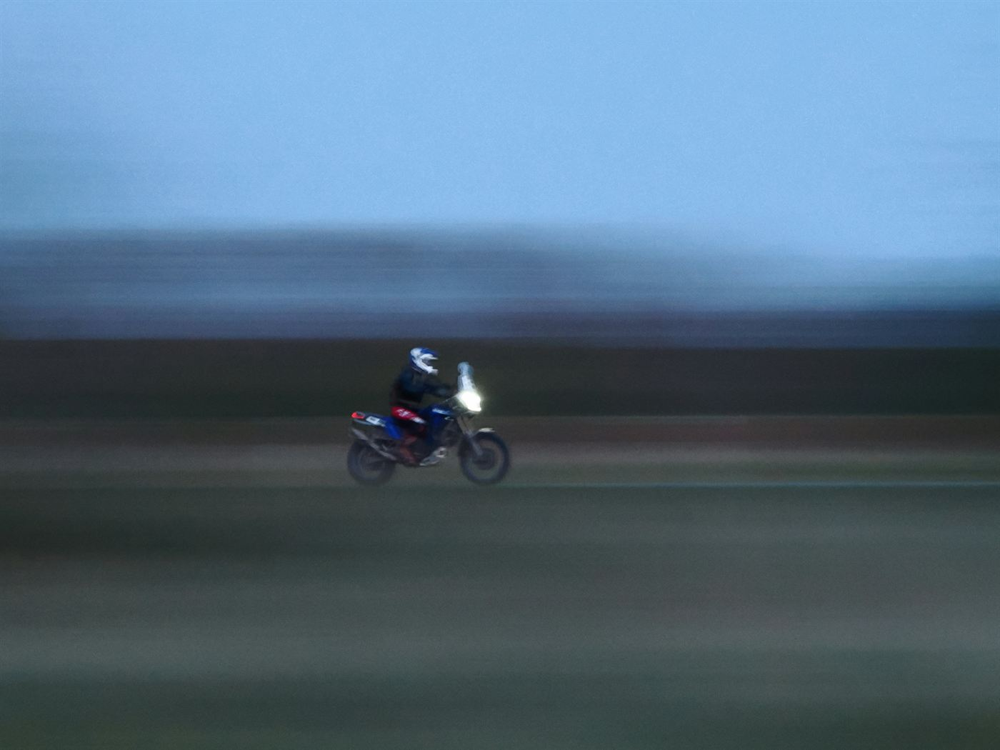

✦ uus singel „Kosmosetee“ on väljas ✦
NEONÖÖ
Süntesaatorid · suured kõlarid · lõputu suvi
Tallinn, Eesti · tegutseme alates 1987
Järgmine peatus: 28. november · Tallinn
01 / lugu
Kolm sõpra ja
üks liiga suur võimendi.
Alustasime 1987. aasta suvel ühes Tallinna keldris, kus oli rohkem pikendusjuhtmeid kui ruumi. Esimene kontsert oli kolmele inimesele, kellest kaks olid meie naabrid.
Vahepeal läksime kõik oma teed, tegime “päris töid” ja lubasime, et kunagi enam ei tule. 2024. aastal helistas Karl ja ütles, et leidis garaažist vana süntesaatori. Ülejäänu on ajalugu — või vähemalt uus peatükk selles.
02 / kontserdid
Tule kuula
03 / galerii
Öö, mis jäi meelde



„Kui bass on piisavalt vali, ei ole homset olemas.“— Karl, trummid
04 / kontakt
Kirjuta meile.
Me vastame.
tere@neono.ee
Broneeringud, intervjuud ja kassid, kes tahavad bändiga liituda.